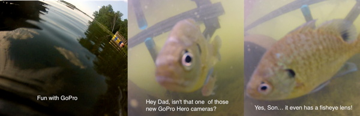

Secrets onboard the Millenium
Posted:
Good morning from stateroom 7199. I'm looking out the back of the ship at a lot of very low hanging clouds. We are in a "family view" stateroom, which means that we have one of the largest decks of anybody onboard. It is perfect for this Alaskan cruise as we can see both directions and even have a great forward view. When the ship is moving we can sit out on the covered part of the deck where we are sheltered from the wind.
Yesterday was a really fun day. We woke up in our two room suite at the Executive Hotel in Vancouver. Jane and I walked the two blocks down to Tim Horton's to get coffee, bagels and donuts. The plan for the day was to shop for wine, water, and soda to bring on board. With shopping complete the next activity is to rent bikes and ride around Stanley park.
As we headed out for our shopping Holly realized that she was missing her tongue scraper!?? What the heck is a tongue scraper? Brian and I were full of extremely unhelpful suggestions for what might substitute as a tongue scraper. My suggestions of Emery boards or repurposed floss were particularly unhelpful since I had no idea what one should even look like. When Holly did finally describe one to me, it seemed perfectly reasonable that a spare plastic zip tie would work. Many pharmacies later we found one, and all was well with the dental hygiene world.
I must say the neighborhood we were shopping in was a bit sketchy. We passed by several very interesting sex shops, one featuring mannequins dressed in thongs fighting with light sabers. We tried to convince Holly that we had seen tongue scrapers inside the adult book store, but she didn't go for it. The liquor store we were going to opened at 9:30 and it was quite an interesting study in humanity. People were literally waiting outside the door for the store to open. When the iron gate of the front door was finally unlocked there was a rush inside for people to buy their first drink of the day. Needless to say we were left alone in the fine wine section of the store. We found a nice selection of British Columbia wines to try including some very interestingly named varietals. Hatfield's Fuse, Quails Gate, and Sandhill. As we checked out with our bottles to take aboard, the guy ahead of us in line was literally shaking to pay for his two beers and get out the door so he could pop one open.
With all of the shopping behind us, we returned to the hotel, where we were granted a late checkout time of 12:30. This worked perfectly for our bike ride. The bike rental place was just around the corner. Vancouver is an extremely bike friendly place. There were great bike lanes that took us from the bike rental place to the pier area and then around the park. It was really beautiful. Although it wasn't a workout pace it was a fun ride, and a good way to get to know the city a little better. We will definitely come back someday just to spend some time in and around the city.
With the bike ride complete we ordered a taxi and headed to the pier. As we were going through the customs line we were joking with one man who was sent to the much shorter line for 'the film crew.' Yes, much mystery surrounds this first night on the ship. Our reservation in Qsine had to be changed at the last minute because of a filming for a 'food related show.'
We of course pumped this guy for information, but he couldn't tell us anything. I even tried the old, 'blink once if its Alton' line but he just laughed and headed through customs.
Later in Qsine we had a really great time with the wait staff and the maitre de. We said, OK, look we know something is happening because they changed our reservation, so who is it? Whats going on? Finally, a member of the staff, who identified himself as James Bond, agreed to the you guess and I'll nod game. I got the person and the show right on my second guess. For which we were rewarded with an invitation to dinner at Qsine again tonight where we may be part of the taping. We will have to sign non-disclosure agreements, so although I would love to reveal the name of the show, I can't. I will say that this could be at the Top of my list for exciting happenings aboard the ship. If I get to meet a celebrity Chef that would certainly be a highlight of my amateur culinary life.
- Posted using BlogPress from my iPad
Location:Inside Passage, enroute to Alaska
How to Think like a Computer Scientist Interactive Edition
Posted:
After hosting the interactive edition of How to Think like a Computer Scientist on the Google app engine at thinkcspy.appspot.com for over a year, we finally made the switchover to a new domain. As of today all requests to thinkcspy will be automatically redirected to http://interactivepython.org
This new domain, is hosted by Webfaction.com. They have very reasonable hosting rates, along with plenty of bandwidth and disk space. I have more control over the development platform that I use, I get to keep my data in a real relational database (postgresql) where I can write queries and export my data as much as I want, and finally, if I ever need to move from Webfaction, I own the domain and can move it with me, and I won't need to go through this name change again.
For those of you who have used the thinkcspy site, you will notice a few upgrades to the content of the book have taken place. In addition, we are now hosting another book along side thinkcspy. So we now have coverage for both CS1 and CS2.
CS1 -- http://interactivepython.org/courselib/static/thinkcspy/index.html
CS2 -- http://interactivepython.org/courselib/static/pythonds/index.html
The CS2 book is based on our paperback book, Problem Solving with Algorithms and Data Structures using Python by Brad Miller and David Ranum. Our forward thinking publisher has given us permission to convert the paper book into an interactive version and make it available online!
The other great thing about the move to interactivepython.org is that you can now host your own course. That is you can use one of our books online, but you are the instructor, so you can grade homework assignments, and look at activity reports for the students in your class. So far we have 20 different institutions hosting one of the two books for a course currently, or for the upcoming fall term. The links to create your own course are right there on the home page, so if you are interested in using this site for a course go right ahead.
The one downside to this move is that I did not migrate any of the data from the old thinkcspy site. So if you have saved programs there you will need to recreate them at the new site. I gave people plenty of notice about the move, so I'm hoping this won't turn into a big issue. If it is, let me know, and I'll try to pull your code out of the google datastore for you.
The second issue with the move is that I don't use google accounts anymore. If you want to save your programs you will need to create an account on the site.
If you have a link to thinkcspy.appspot.com on any pages you control, please make the change to point to the new domain and location. Thanks!
If you are interested in contributing to the project, have a book you would like to host, or are just interested in how we are doing this, you can check out the code on github: http://github.com/bnmnetp/runestone If you don't want to go that far, but have assignments, or assessment questions you would like to contribute, please contact me!
Dragonfly Porn
Posted:

Dragonfly Porn
Just messing around with a new lens at the lake. I wish I had bought the 100-400 before going to Africa. Anyway this must be dragonfly mating season.
OK, this is silly, but I was playing around with the GoPro yesterday to see if it would float, and the sunfish were just absolutely fascinated with it. The captions came to me on my bike ride this morning. I know, a mind is a terrible thing to waste.
Posted:

OK, this is silly, but I was playing around with the GoPro yesterday to see if it would float, and the sunfish were just absolutely fascinated with it. The captions came to me on my bike ride this morning. I know, a mind is a terrible thing to waste.
Saying goodbye to Namibia
Posted:
Sitting in the lobby of the Hotel Safari this morning. We've checked out and are just hanging here until about 11:00 before we head to the airport. It seems like a lifetime ago that we checked in here, exhausted, and grubby after 39 hours of travel from the USA. Now we are refreshed, our bodies are on the right time zone and heading on to the next segment of our journey. Its really strange to think that I'm heading to Israel, while the rest of the group is heading to cape town. One consolation is that I'll be enjoying nice warm 90 degree weather, while they will be in Cape Town's winter at 59 degrees.
Last night we had a very nice dinner at Nampa and Matty's house. I'm very jealous of Matty's indoor wood fired oven. He had obviously been grilling meat for us all afternoon. Not only does it make delicious meat but it also heats their family room. It was amazing to hear the story of these two Luther College Alums. They were at Luther in the mid 90's, but by the time they found their way to college in the USA they were married and had small children. They are so grateful to the people of Decorah for their hospitality and help that they are always eager to open their home to Americans who are traveling in Namibia. We worked hard on their youngest daughter to convince her that she must come to Luther to go to college.
As I think about the two purposes of our trip, the philanthropic, and the cultural I am inspired to try to return someday, and to help to keep up the good work that EmpoweringLearnersNamibia has started. There is so much more we can do to help, and it really doesn't take much money to accomplish a lot here. For example a new Kindergarden school could be built to replace the 10x12 metal shack for about $5000.00 US.
Exhaustion
Posted:
Its official folks, I'm ready to head home. The ITiCSE conference is over. The paper has been presented, I've been to a dozen or more sessions. I'm tired. I'd like to get something to eat, but all the restaurants in the area are not even open for dinner yet, and its 7pm! This is a good conference. I appreciate that many of the sessions seem a bit more technical than would be typical at SIGCSE and I like that.
Although I was here alone at the conference I've met some really nice people, and made some good connections with others doing research in areas that overlap with Runestone Interactive in one way or another. I've got a lot of ideas about what may be good directions to go next with the project, and lots of ideas on some new literature that I should be studying.
So, whats left of this trip? Tomorrow I'm taking a tour of Cesarea that will start at 7:30 tomorrow morning and will end with me getting dropped off at the airport at 2pm. The buzz at the conference this afternoon was about getting out of Isreal. Apparently, security is much tougher going out of the country than it is going in. So it is recommended to be at the airport 3 hours ahead of your flight. I'll fly to Heathrow and I've got a room at the Sofitel. That just seems to make the most sense. I don't have to find and pay for a bus to drop me off at another hotel, as I can just walk. It has free WiFi, and it will be easy for me to walk back over and go through security in the morning to rejoin the group. I really miss being with the group. Saturday we fly from London to Chicago and then we still have five hours of driving to get us home. Its actually hard to imagine that I will be home in roughly 48 + 8 hours. The +8 is the hours that are lost to timezone changes.
As I was sitting outside my hotel writing this I had the good fortune to be invited to dinner by one of my new colleagues that I met at ITiCSE. David was traveling with his family and it was very nice to have a relaxing dinner again.
High Security
Posted:
Well, I'm through security. Sitting in Segafredo Zanetti, enjoying a very nice Israeli Chardonnay. Everyone told me to get to Ben Gurion at least 3 hours before my flight so that I could get through the security process. Now I understand why. These people are serious about their security.
When you first get to the airport you have to get in a line to get your luggage X-rayed before you even get to check in for your flight and get your boarding pass. This is the initial grilling. Passport please? Long study of the passport followed by a long study of my face. Why were you in israel, where did you stay, do you have a receipt? Did anyone give you a present? Where has your luggage been? Is it remotely possible that someone could have gotten access to your luggage? You were at a conference? Can you prove it? and on and on… Finally when he seemed satisfied, there was much flipping through my passport and studying of dates and places. Are these guys working for Mosad or are they low level airport security employees?? My bet is on the former. Dude, I'm trying to leave your country not smuggle something in. Once you get past this initial questioning, your luggage is put through some kind of industrial strength X-ray machine. When the X-ray is done your bag is pretty much ejected as if being shot out of a cannon.
The British airways desk is pretty easy compared to the initial grilling. And because it takes so long to answer all of the questions and get your bags X-rayed, the lines at the checkin counter are pretty short. Sadly I did not get a free upgrade from Israel to London. But, I did get an aisle seat.
Now you have to go through security. Passport and boarding pass. Everything out. OK, my Namibian Rock sculpture seems to be a real curiosity. Thank God I didn't bring the Magnetite! I think the rock sculpture went back and forth through the X-ray machine 3 times in three different orientations. Finally, all was well and I was able to proceed.
Just when you thought you were done… passport control. Again with the questions, and studying of the passport.
Finally you are through. Now, here's the final indignity. My guide for the morning had told me that the Golan Heights Chardonnay was well worth getting in the duty free shop. Sounds great. So, I head to the "worlds largest duty free" and ask the guy where the Golan Heights Chardonnay is. Right here sir. But…. "Are you flying to the US?" Yes I am. Well, sir, you are not allowed to take any liquids into the USA if you are coming from Israel. Really?? But, its duty free, I thought that was allowed. "I'm sorry sir, they do not trust our security"
Good Grief.
P.S. Yes, there was one more passport check as I passed out of the common area and onto my concourse.
Almost back to Windhoek
Posted:
Well, here we are on the B2 not 55km from Windhoek and the Safari Hotel. Suddenly our coach makes a very bad noise and we begin to coast down the road. Joey looks rather concerned. We coast to a stop and pull over to the side of the road. One of the few places in all of Namibia where there is almost no shoulder. The diagnosis is dire, the clutch plate is out. Luckily its only 1:15 in the afternoon and we are close to our destination. David is on the phone getting another coach on its way. This bus that we've spent so many hours with is not taking us any further.
So far we are all in good spirits. The sun is out, the weather is nice. We are joking about our plight and assessing our provisions. In the cooler we have some apples, a half bottle of Riesling and one Windhoek light. Suddenly Joey says… "I need a beer!" We all crack up, we'd be happy to give Joey our last beer, he's been such a good sport with great humor this entire trip.
We are thankful that this little mishap happened here. When we think of all the places this could have happened. The middle of Etosha, the middle of the desert, Each of which would be hours and hours from anywhere likely to have the ability to come and get us. We'll be just fine, and this answers the important question of what to write about in today's blog.
UPDATE: We're moving again, in a lovely, highly air conditioned coach. Its just 2:55 so we were only delayed about 1:45. When the replacement bus got here we formed a bucket brigade and transferred the luggage from one to the other in no time. We're looking forward to arriving at the Safari and we'll still have some time to relax and refresh before we go to our dinner at Nampa and Matty's house.
SUV in the Dunes
Posted:
In the latest installation of our extreme sports fetish while traveling we really enjoyed the three hour ATV excursion into the sand dunes. This was our first opportunity to use our newly acquired helmet cam. enjoy! I'll give a more detailed report on this excursion in a separate post.
video/quicktimemov48036076.621
Photo Highlights from Namibia
Posted:
Well, its really hard to pick out the photo highlights from this trip, but I decided to take a quick stab at it during my hour at the internet cafe today. So, here's a link to the flickr photoset. Hope you like it.